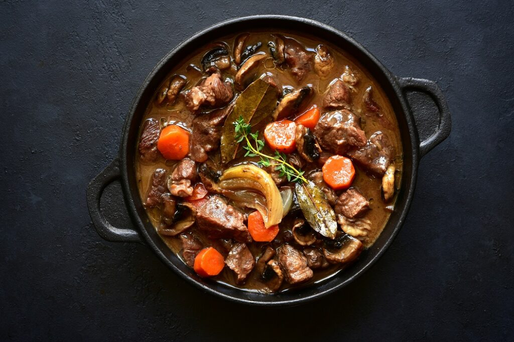

Boeuf Bourguignon

Description:
Boeuf Bourguignon, a classic French beef stew, gained cinematic fame in "Julie & Julia." This dish features tender chunks of beef braised in red wine, complemented by savory bacon, pearl onions, and mushrooms. Slow-cooked to perfection, Boeuf Bourguignon embodies the rustic charm of French cuisine, celebrated for its rich flavors and hearty warmth. In the film, its preparation by Julie Powell mirrors the meticulous dedication of Julia Child, showcasing the dish as a symbol of culinary passion and cultural appreciation.
Ingredients:
- Beef Stew Meat - 2 pounds, cut into 2-inch cubes
- Olive Oil - 2 tablespoons
- Bacon - 6 ounces, diced
- Carrots - 2, sliced
- Onions - 1 large, sliced
- Garlic - 2 cloves, minced
- Red Wine - 3 cups (a full-bodied wine like Burgundy)
- Beef Broth - 2-3 cups
- Tomato Paste - 1 tablespoon
- Thyme - 1 teaspoon, dried (or a few sprigs of fresh thyme)
- Bay Leaf - 1
- Pearl Onions - 20, peeled
- Mushrooms - 1 pound, quartered
- Butter - 2 tablespoons
- Flour - 3 tablespoons
- Salt and Pepper - to taste
Steps:
- Prepare the Beef:
- Preheat your oven to 450°F (230°C).
- In a large Dutch oven, heat the olive oil over medium heat.
- Add the bacon and cook until crispy. Remove the bacon and set aside.
- In the same pot, add the beef cubes in batches, browning them on all sides. Remove the beef and set aside.
- Cook the Vegetables:
- In the same pot, add the sliced carrots and onions. Cook until the onions are translucent.
- Add the minced garlic and cook for another minute.
- Combine and Simmer:
- Return the beef and bacon to the pot.
- Stir in the tomato paste, thyme, and bay leaf.
- Sprinkle the flour over the mixture and stir to coat the meat and vegetables. Cook for 4-5 minutes.
- Add the wine and enough beef broth to just cover the meat.
- Bring to a simmer, then cover and transfer to the preheated oven. Cook for 2 1/2 to 3 hours, until the meat is tender.
Boeuf Bourguignon is a rich and hearty dish that exemplifies classic French cuisine. The film "Julie & Julia" highlights its timeless appeal, capturing the essence of Julia Child’s culinary passion and the joy of cooking.